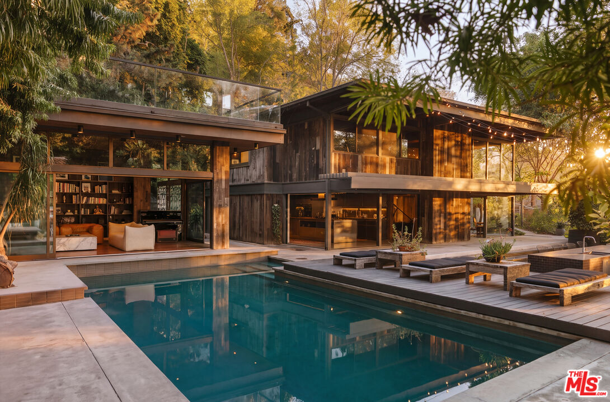
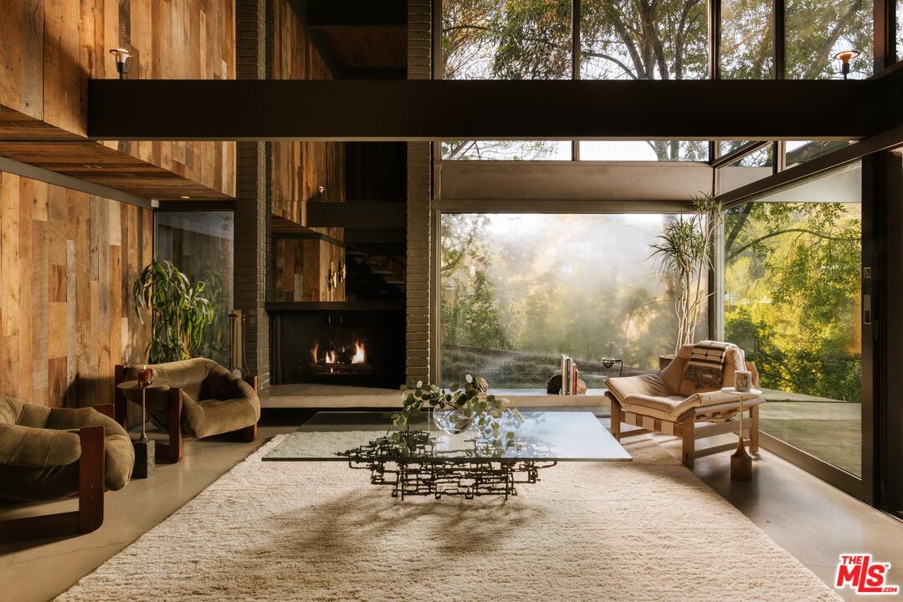
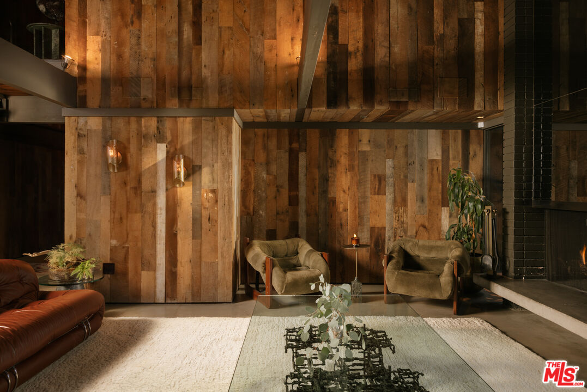
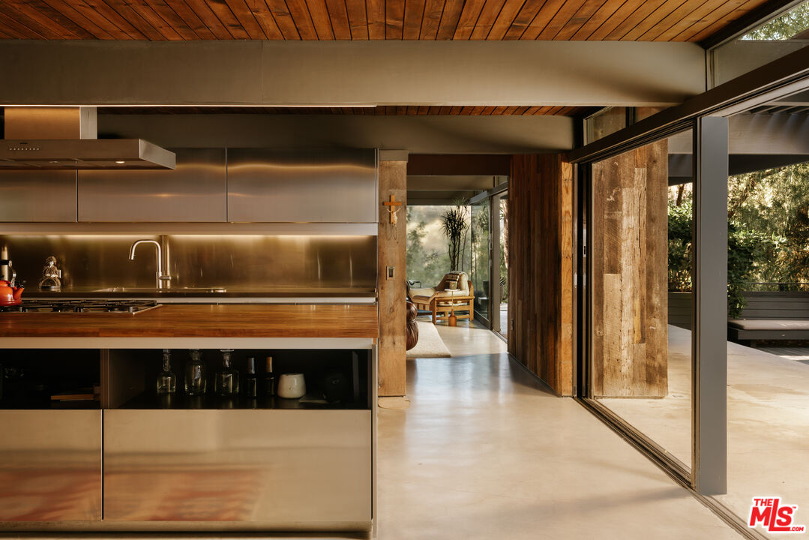

Obsession No. 027Nichols Canyon · Los Angeles
2563 Nichols Canyon Rd
Some homes have great outdoor space. This one makes you feel outside even when you’re standing in the living room.
Why it made the edit
“The architectural pedigree is extraordinary, but it is the mood that stays with you.”
Some homes have great outdoor space. This one makes you feel outside even when you’re standing in the living room. The Ajioka House draws you inward with its warmth—reclaimed oak, brick, concrete, beams overhead—then sends your eye right back out through walls of glass, toward the canyon and the green beyond. It is private, grounded, and quietly cinematic: a house that holds you close while making the whole landscape feel like part of the room.
It is a rare Buff & Hensman original, designed in 1960, where California modernism still feels completely alive. Commune’s restoration honors the bones rather than competing with them: post-and-beam structure, long sightlines, and glass doing what glass does best. Four structures sit across nearly an acre, each connected by the same easy indoor-outdoor rhythm.
Four bedrooms, four and a half baths, and 4,200 square feet in Nichols Canyon, listed at $8,995,000. The architectural pedigree is extraordinary, but it is the mood that stays with you.



Want to see it in person?
Curious about this one?
Let’s talk.
Listed by Branden Williams & Jennifer Naim, The Beverly Hills Estates. House of Zonshine does not represent this listing. Property details are from listing information and public sources and should be independently verified.